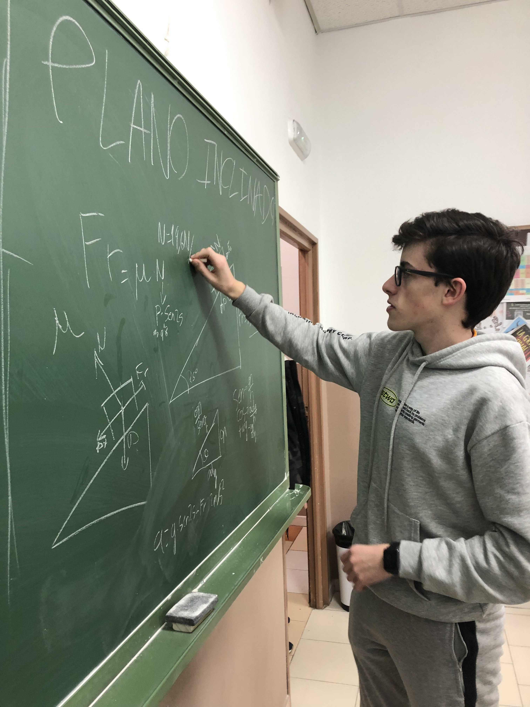

Ayuda Mutua
Reflexión:
Desde el inicio del primer año del BI me apunté a este voluntariado, en el que nos quedamos un día a la semana para ayudar a chavales de la E.S.O. con sus deberes y exámenes. Yo particularmente les ayudo más con las asignaturas que mejor se me dan, como Matemáticas, Física, Química o Dibujo Técnico, y otros compañeros les apoyan con otras asignaturas como Historia o Biología. Así, nos coordinamos y cubrimos las necesidades de todos los chavales, para que no se queden con ninguna duda. Esta ha sido una de mis actividades CAS favoritas, ya que he podido ver directamente cómo mi trabajo tiene un impacto directo sobre estos estudiantes, y muchas veces me han dado las gracias porque les ha salido bien un examen. Incluso diría que he hecho amigos ahí, ya que hay chavales con los que he jugado al baloncesto algunos días y otros a los que me encuentro llendo al instituto por las mañanas y comparto el trayecto con ellos.
Por otro lado, también creo que tengo una especie de obligación moral de ayudar a aquellos a los que les cuestan más los estudios ya que, aunque hay muchos factores que influyen en el éxito académico, uno de ellos sigue siendo el talento, algo que no se puede controlar, y entonces puede haber personas que estudien el mismo tiempo que yo pero que por otras razones no consigan sus objetivos, así que siento que los que hemos tenido más suerte debemos ayudar a esas personas. Además, pienso que este CAS me ha ayudado a mejorar algunas carencias que tenía, como por ejemplo hablar en público o las relaciones interpersonales en general. En el segundo año del BI llevaré la organización de este taller CAS.
Resultados de aprendizaje: nºs 1, 4, 5 y 7.
Pruebas:
-

- 
-

-